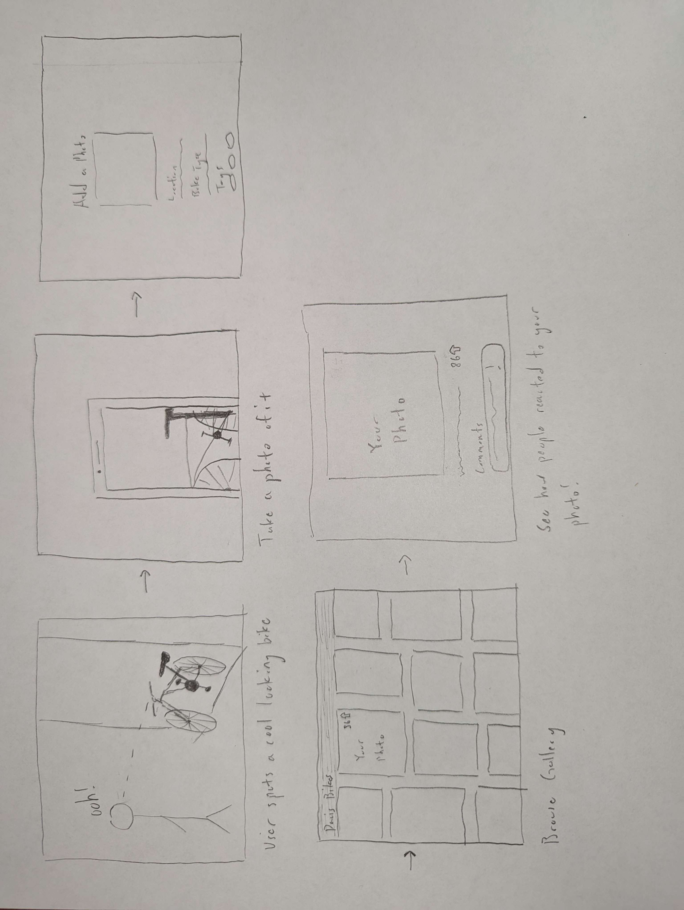

User Journey
Summary
I was able to takeaway a lot of new insights by having someone else walk through my storyboard. I hadn't really thought about the technical side of my project yet, but my partner asked how my project would work technically and helped me consider more carefully how I could actually implement my ideas. For instance, I realized I would need to read in data from users and potentially have user accounts. Testing my user journey also helped me think more literally about how each step of the process would connect to the next.